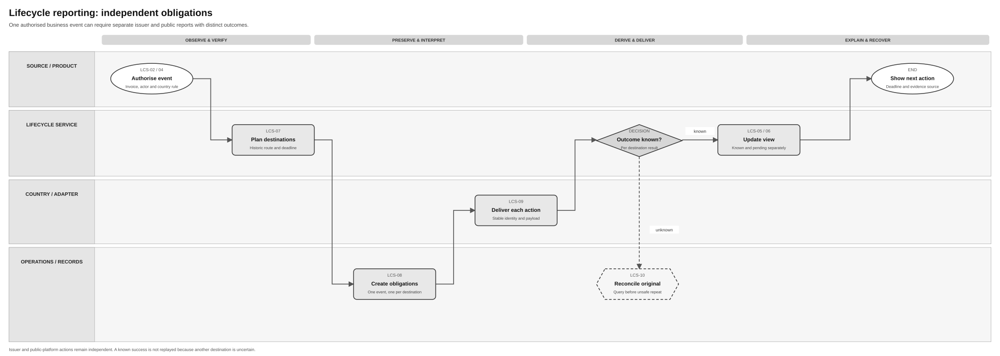

Invoice Lifecycle Logical Feature Specification
Solution Summary · Sequence and Reuse Assessment
Revision overview
This separate functional view develops SPEC-SEI-009. The source remains unchanged. LCS-01–10, LCS-I01–09, LCS-R01–13, LCS-A01–25 and SPFE/AXII IDs keep their meanings. This view adds LCS-R14 and LCS-A26/27 for the supplied transition-outcome behaviour and reconciles the new Annex II snapshot. API fields and reuse gates belong to SPEC-SEI-030.
Independent dimensions, actor authority, full versus partial payment, per-destination reporting and historical follow-up remain unchanged. Country mapping, calendar, optional scope, provider contracts and build readiness remain open. This is an unpublished draft; it does not enable new customer actions.
1 Purpose, terms and authority
The buyer, seller or authorised accountant must understand invoice facts, the outcome of each requested action and any outstanding report. The shared glossary distinguishes raw events, derived status, reporting obligations and outcome unknown. A transition attempt is a request to change status; its result differs from the invoice's successful status and from each external report. REF-PRODUCT; INT-LCS05.
An authenticated caller is the identity presenting the request. The represented party is the business for which it acts. Verify both, the actor role and the permitted invoice action. A dataset token or platform connection alone does not prove authority. SPFE-S02 Article 11; LCS-R04.
2 Scenarios and safe next actions
| Actor and trigger | Required observable outcome | Failure or alternative and safe next action | Existing controls |
|---|---|---|---|
| Platform supplies delivery, validation or status evidence | Save the source meaning and update supported dimensions. | Unmatched invoice, unknown code or wrong namespace stays restricted for review; no guessed success. | LCS-01–05; R01–03/09/11; A01/02/11/15 |
| Buyer records acceptance or rejection | Retain the authorised decision and occurrence date; plan applicable issuer/public communications. | Denied authority or missing required fields holds the command with correction guidance. Presumed acceptance remains derived. | LCS-02/04/07–09; R04–06/12; A03/05/18 |
| Buyer records payment; seller records collection | Keep actor, date, amounts and evidence; assess full-payment and each destination separately. | Partial payment or bank observation alone cannot create public full-payment success. Conflicting facts require review. | LCS-02–05/07–10; A04/06/20 |
| Product requests a status transition | Make its processing result and latest successful invoice status separately visible. | Failed transition remains in history; preserve the previous successful status and give a corrective action. | R14; A26/27 |
| A report is sent to several required destinations | Each destination has one execution owner and its own result. | One failure cannot undo a known success. Reconcile only the uncertain original operation before repeating it. | LCS-07–10; R05/06; A08/16/24 |
| Buyer/seller corrects an earlier report | Keep cancellation and replacement lineage; retain original facts and reporting history. | Unknown cancellation result blocks replacement until resolved. Cancellation does not withdraw the invoice. | LCS-03/07–10; SPFE-R03; A12; SPFE-A03 |
| Product misses a notification | Read the saved, authorised history and recover the latest view. | If Sage has not received the external event, use qualified source consultation; a history read cannot discover it. | R08/11; A10/15/23 |
| Evidence arrives late, conflicts or follows a provider switch | Retain original chronology and invoice network context. | Hold unsafe derivation/reporting. Resolve authority and original channel; do not use the new invoice route by default. | R07/10; A06/07/09 |
| Customer requests an optional or provider-specific action | Check enabled scope, direction, supported command and required fields. | Keep valid incoming evidence even if the outgoing action is disabled. Missing catalogue is an evidence gap with an owner. | R12/13; A19/21/22/25 |
3 Activity order and process support
| Activity | Required behaviour and outcome |
|---|---|
| LCS-01 Receive | Accept scoped platform evidence or a separate authorised business fact; retain source and query/notification identity. |
| LCS-02 Verify | Check invoice, represented party, caller, actor, environment and original route. Hold unmatched evidence; deny unauthorised commands. |
| LCS-03 Preserve | Save the raw observation and duplicate, correction or conflict relationship before interpreting it. |
| LCS-04 Interpret | Apply the effective country/provider rules. Unknown values remain raw and require an owner. |
| LCS-05 Derive | Calculate independent dimensions with source, rule version, evidence age and next action. |
| LCS-06 Publish | Make the saved view and authorised history readable; notify only after saving the change. |
| LCS-07 Plan obligations | Select each applicable destination, historical actor/channel, duty and deadline. Missing evidence blocks the affected action. |
| LCS-08 Create obligations | Save one obligation per event, destination and purpose under the selected rule version. Retain stable identity across recovery. |
| LCS-09 Deliver | Record each attempt and result at its actual evidence level. Prevent a second sender for a provider-owned report. |
| LCS-10 Reconcile | Establish the original uncertain result or resolve conflicting evidence before another unsafe action. Keep an owner and deadline visible. |


The diagram separates the saved business fact from issuer/public reporting. Its rejection/payment examples use the destination rules in section 5. A successful destination remains complete when another needs recovery. Cancellation uncertainty follows the same reconciliation boundary. The event-derivation diagram supports LCS-01–06; the API sequences explain the French reuse candidate.

4 Functional requirements and invariants
| ID | Required behaviour | Authority |
|---|---|---|
| LCS-R01 | When evidence arrives, preserve its raw code, namespace, actor, times, identity and integrity/version references before mapping. | PRD224 FR1–3; PRD232 LS-FR1/14 |
| LCS-R02 | Interpret only through effective country/provider rules. Keep unknown codes without advancing status. | PRD232 LS-FR2/12/16 |
| LCS-R03 | Keep processing, validation, delivery, commercial, payment and reporting outcomes separately queryable. Distinguish explicit and derived facts. | PRD224 FR3–4/18 |
| LCS-R04 | Before accepting a customer command or sending a report, verify actor authority, event applicability and required data. | PRD224 FR1/5 |
| LCS-R05 | Determine reporting destinations and deadlines from approved rules and the invoice's historical context. | PRD224 FR6–10 |
| LCS-R06 | Save and deliver each event/destination obligation independently. Repetition must not add a duplicate effect within its qualified contract. | PRD224 FR8/11–13 |
| LCS-R07 | Retain duplicate, late, conflicting and superseding evidence. Hold unsafe interpretation/reporting for review. | PRD224 FR14–17 |
| LCS-R08 | Let authorised callers read current views, history, pending actions and report results and recover missed product notifications. | PRD224 FR18–23; PRD242 PEP-FR9 |
| LCS-R09 | Interpret Peppol transport, MLR, MLS and Invoice Response codes only in their qualified source namespaces. | PRD242 PEP-FR2–6 |
| LCS-R10 | Preserve original route, process and mapping context after a provider change. | PRD224 FR9; PRD242 PEP-FR10 |
| LCS-R11 | Receive platform evidence through a qualified query or supported notification. Distinguish source refresh, saved-history reads, file retrieval and outgoing reporting. | SPFE-S02 Article 10; PRD242 |
| LCS-R12 | Record each event's mandatory, optional, correction or technical classification and applicable destinations. Keep legal applicability, provider support and enabled product scope separate. | ES-RD10; SPFE-S02; proposed product control |
| LCS-R13 | Qualify provider/version, direction, actor, fields, transition/correction procedure and automatic reporting effects before sending. Preserve valid incoming optional evidence; hold unqualified commands with an owner. | PRD224 FR10; existing proposed control |
| LCS-R14 | For a supported transition, expose the attempt result separately. While pending or after confirmed failure, retain the last successful status. Save a failed attempt in history with operationStatus = ERROR; advance the affected view only after qualified success. |
INT-LCS05; supplied behaviour applied as proposed Spain integration control |
The existing LCS-I01–09 invariants remain binding to this draft: source immutability, independent dimensions/namespaces, evidence-level limits, derived labels, separate obligations, duplicate/conflict lineage, historical context and appended corrections. Their IDs are unchanged.
Apply tenant, represented-entity, environment and delegated-access checks to commands, reads, subscriptions and operations. Protect invoice/payment evidence; keep raw payment payloads and credentials out of logs. Monitor unknown mappings, source lag, obligation age, deadline risk, conflicts and uncertain outcomes. Exact targets and retention policies remain open under the predecessor's quality controls.
5 Spain rules and Annex II
5.1 Destination and obligation rules
The predecessor's destination table owns the unchanged mandatory/optional classifications under ES-RD10 Articles 10/12. Recipient full acceptance/rejection and effective full payment communications to the issuer differ from public reporting. Optional partial decisions, partial payments and assignment have no corresponding supplied public event code. Do not turn French mandatory labels into Spain duties. LCS-R12/13.
SPFE-S02 Article 7.1 supplies a presumed public acceptance view under its conditions; no public explicit-acceptance report code is supplied. Article 7.4 defines the conditional prepaid exception. Article 8.4 defines exceptional handling for a qualifying SPFE outage. Article 8.5 retains cancellation traceability. The existing LCS-SPFE-R04 and country/calendar gates remain open; the new Annex II contains no revised deadlines or rollout dates.
5.2 Public event contract
Each message requires the referenced invoice's series/number, issue date, seller NIF and seller name. These identify the invoice; they are separate from the authenticated caller and represented reporting actor. ResponseCode is under ApplicationResponse/cac:DocumentResponse/cac:Response/cbc:ResponseCode. SPFE-S02 Annex II; SPFE-S22 pp. 4–14.
| Actor / exact code | Required meaning and event fields | Conditional fields / correction rule | Source locator |
|---|---|---|---|
Recipient PAYMENT |
Full effective payment; cbc:EffectiveDate and DueDate are 1..1. |
ShipmentDate, ReceptionDate, CorrectedInvoice, NegativeAmountInvoice are 0..1. Partial facts do not emit this public event. |
SPFE-S22 pp. 4–6; SPFE-S03 §6.8 |
Recipient CANCELPAYMENT |
Cancel the earlier payment communication; all four invoice-reference fields are required. | Qualify cancellation before a changed report. Retain the payment fact. | SPFE-S22 p. 6; SPFE-S03 §6.8 |
Recipient REJECTION |
Rejection date in cbc:EffectiveDate; cac:Status/cbc:ConditionCode is required. |
L1 01 = commercial rejection; 02 = private consumption/not related to business activity. Mutually exclusive with recipient PAYMENT. |
SPFE-S22 p. 7 and L1 p. 15; SPFE-S03 §6.8 |
Recipient CANCELREJECTION |
Cancel the earlier rejection communication; four required invoice-reference fields. | Do not fabricate explicit acceptance when cancellation restores a supported presumed view. | SPFE-S22 p. 8; SPFE-S03 §6.8 |
Issuer SETTLEMENT |
Full collection date in cbc:EffectiveDate, 1..1. |
DueDate, FinancingArrangement, ShipmentDate, ReceptionDate are 0..1. Collection differs from a recipient payment assertion. |
SPFE-S22 pp. 9–10; SPFE-S03 §6.9 |
Issuer CANCELSETTLEMENT |
Cancel earlier collection communication; four required invoice-reference fields. | Reconcile cancellation before a changed report. | SPFE-S22 p. 11; SPFE-S03 §6.9 |
Issuer DEFAULT |
Payment due date in cbc:EffectiveDate, 1..1. |
Relevant ShipmentDate/ReceptionDate, 0..1. Mutually exclusive with issuer SETTLEMENT. An observation timestamp is not the due date. |
SPFE-S22 pp. 12–13; SPFE-S03 §6.9 |
Issuer CANCELDEFAULT |
Cancel earlier non-payment communication; four required invoice-reference fields. | Retain history and business facts; no invoice withdrawal. | SPFE-S22 p. 14; SPFE-S03 §6.9 |
LCS-SPFE-R01–04 and LCS-SPFE-A01–04 retain their existing detailed statements. The table above applies the reviewed snapshot without changing those IDs. The 52-row field matrix and original ledger retain each AXII requirement and positive/negative acceptance ID. The comparison adds page evidence rather than duplicating that inventory.
5.3 Source limits and country isolation
The new snapshot does not resolve the literal missing/double slash in PAYMENT's ShipmentDate path, indicator serialization, the declared hierarchy of seller-name rows in cancellation messages, complete event envelopes or response semantics. LIF-G04 and SPFE-Q16/17 remain open. Do not silently repair the source or map France reasonCode to Spain ConditionCode. SPFE-S22; SPFE-S08 §§5.8–5.9.
Shared behaviour is source preservation, independent views, transition-attempt history and obligation recovery. Spain rules select event code, actor, fields, reporting classification and calendar. Existing DTS is the preferred transformation candidate where ApplicationResponse generation is required; build, mapping and operational support are unverified. Another country must select its own rules and preserve earlier history under the original versions. LCS-A13/14; LIF-API-A01/04/08.
6 Functional acceptance
These are required scenarios, not executed implementation tests. The original assurance table preserves detailed activity/data traceability.
| Existing checks | Coverage retained and required evidence |
|---|---|
| LCS-A01/02/11/22 | Delivery does not set acceptance/payment; Peppol code collisions, unknown codes, manual/technical/payment-processing states retain their correct source and dimension. |
| LCS-A03/04/05/18 | Authorised rejection/full payment; bank-observation limit; presumed versus explicit acceptance; no invented public acceptance code. |
| LCS-A06/07/12 | Duplicate/conflicting/late evidence and corrections preserve lineage and hold unsafe progression. |
| LCS-A08/09/24 | Independent destinations, timeout reconciliation, historical follow-up and provider-owned reports avoid duplicate execution. |
| LCS-A10/15/16/17/23 | Separate source consultation from saved-history recovery; incoming reports cannot cause reporting loops; partial notifications cannot clear omitted facts. |
| LCS-A13/14 | Country isolation and actual implementation qualification. Retain France behaviour while testing the selected Spain rules, mappings and recovery. |
| LCS-A19/20/21/25 | Disabled optional actions, conditional fields, partial payments, corrected totals, assignment, provider evidence gaps and read/write asymmetry retain owned outcomes. |
| LCS-SPFE-A01/02/03/04 | Eight codes/wrong actor/unknown code; event dates/reasons; uncertain cancellation; applicable rollout, prepaid and incident conditions. SPFE-S02/S03/S22. |
| LCS-AXII-* acceptance pairs | Every one of the 52 source field/group occurrences retains its existing valid/applicable and invalid-content check. Inventory matching does not prove those tests passed. REF-FIELDS. |
| Added check | Trigger and required result | Coverage |
|---|---|---|
| LCS-A26 | A supported transition is in progress, then fails. The invoice retains its last successful status throughout. History shows the failed attempt with operationStatus = ERROR, its correlation and owned next action. An earlier valid business fact remains saved if only its report failed. |
R03/06/08/14; INT-LCS05 |
| LCS-A27 | History contains lifecycle Completed (209), operational COMPLETED, operational ERROR and an unknown external outcome. Interpret each in its own domain. No technical completion can fabricate payment, buyer acceptance or AEAT admission. |
R02/03/07/14; INT-LCS03/05; SPFE-S02 Article 8 |
Pilot evidence must exercise these cases with the selected build, country rules, approved fixtures and actual qualified source contracts. The API view adds contract compatibility and correlation tests; document validation alone cannot close a release gate.
REF Source references
| Source ID | Original source and version/date | Exact locator | Supported claim and limit |
|---|---|---|---|
| REF-BASE / REF-PRODUCT | SPEC-SEI-009, updated 20 October; PRD224, PRD232, PRD242, current repository drafts/discovery | LCS requirements/invariants/acceptance; PRD FR1–23, LS-FR and PEP-FR | Existing product/design baseline and preserved IDs; not approved architecture or runtime evidence. |
| ES-RD10 | Original RD 238/2026, published 31 March 2026; source identity retained from baseline | Articles 8.3, 10 and 12 | Recipient/issuer and public duties remain separate; no private API catalogue supplied. |
| SPFE-S02 | Original final order, published 5 October 2026; official publication, checked 22 October | Articles 7–11; Annex II pp. 36–42 | Legal duties, authority and event fields; not complete wire contract. |
| SPFE-S03 | Original catalogue, 0.1.0, 9 October 2026 | §§6.4–6.5 pp. 12–14; §§6.8–6.9 pp. 16–19 | Consultation, exclusivity, full payment/collection and cancellation; no tested integration. |
| SPFE-S08 | Original formats, 0.1.0, 9 October, BORRADOR | Response description p. 14; §§5.8–5.9 pp. 14–15 | Missing complete event formats remain a gate. |
| SPFE-S22 | New supplied Annex II, filename dated 21 October, formal revision unknown | I.1 pp. 4–6; I.2 pp. 7–8; I.3 pp. 9–11; I.4 pp. 12–14; II/L1 p. 15 | Same reviewed field semantics and codes as baseline; no legal amendment or implementation proof. |
| REF-FIELDS | Original field ledger; new comparison note | All AXII traces and their source locators | Row inventory and unchanged source meaning; executable mapping and test results unverified. |
| INT-LCS01–05 | User-supplied lifecycle evidence, received 22 October, revision unknown | Named guide sections; especially INT-LCS05 | France documentation and supplied attempt-result rule. Application to Spain is a proposed control; build coverage is unknown. |